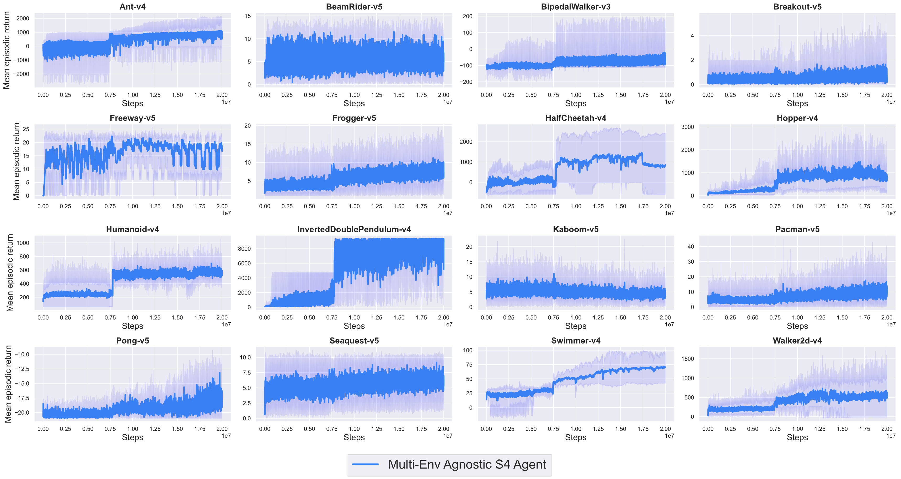
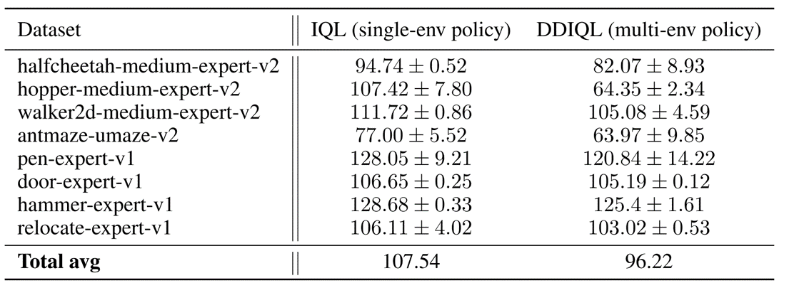
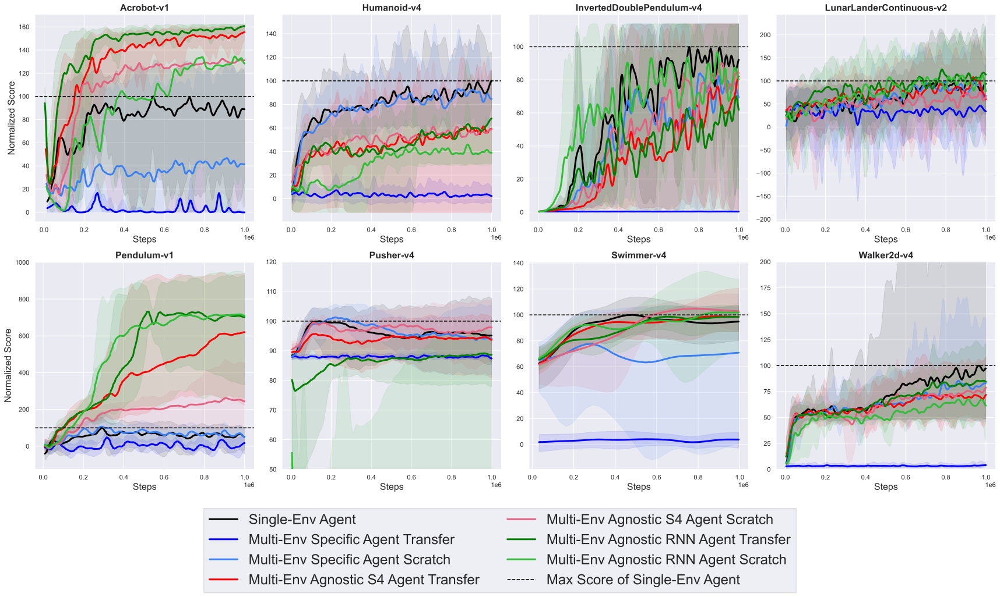

Experiments
(1) Online Multi-Environment Training

Figure 3. Results of multi-environment training in 16 heterogeneous environments
(Classic Control and Mujoco)
In the Figure 3, we observe that in most environments, the agnostic agent approaches the performance of the single env agent, and in a few environments it outperforms it.

Figure 4. Results of multi-environment training in 16 heterogeneous environments
(Mujoco and Atari)
To train the Atari environments together, we used the Agnostic Encoder on Mujoco and the Resnet Encoder on the Atrai environments. In Figure 4, when we trained the Atari and Mujoco environments simultaneously, performance did not improve quickly on the Atari.
(2) Offline Multi-Environment Training
Table 1. Performances of DD-IQL
Table 1 shows the results of modifying the offline RL algorithm, IQL, on the D4RL dataset and training it with our architecture (DD-IQL). We achieve about 89% performance compared to the single-env agent.
(3) Pretraining and Transfer Learning
In these experiments, we compare the performance of a baseline and an agnostic agent. The baseline is a setup similar to Deepmind's GATO, with environment-specific encoder and decoder layers. In transfer Learning, baseline has to add new layers and learn from scratch.
Figure 5. Pretraining
Figure 6. Transfer Learning
In the experiments, both the baseline and agnostic agents are close to the performance of agents trained on a single env. However, in transfer learning, the baseline does not learn well. We suspect that this is due to overfitting the environments trained on in pretraining.